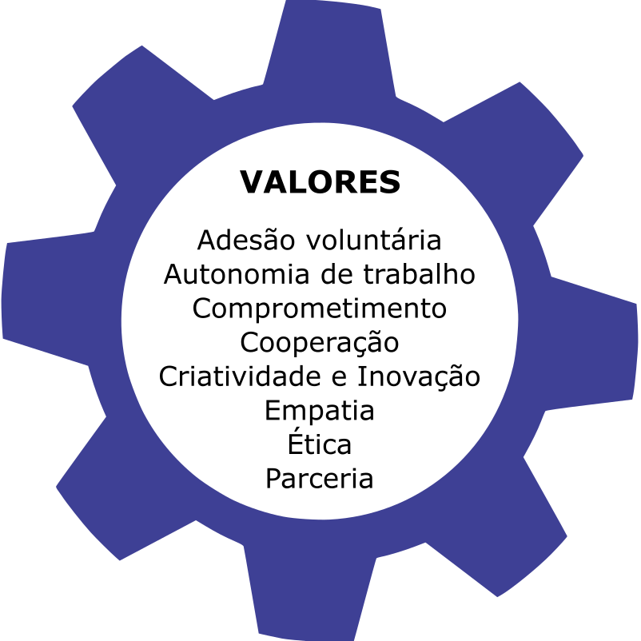
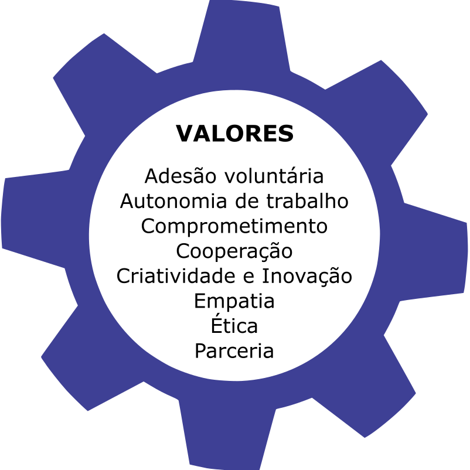
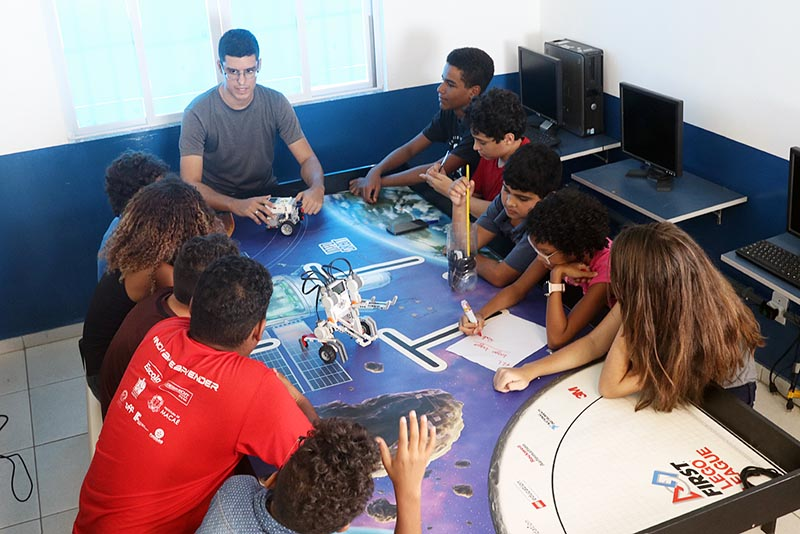
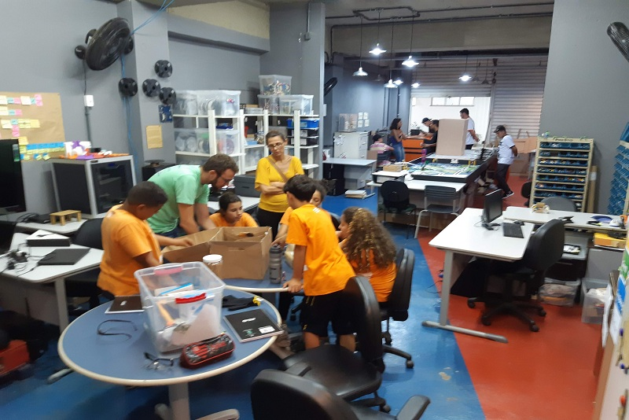

Quem Somos
O #inovareaprender é um programa de inovação pedagógica, que tem como premissa possibilitar que alunos e educadores se tornem autores de novas tecnologias, e não somente usuários de recursos tecnológicos, tornando-os criadores de sistemas e ou ferramentas que atendam as demandas da sociedade. A iniciativa visa contemplar alunos da educação básica (ensino fundamental e médio), universitários (extensão/monitoria) e docentes da educação básica e graduação.
As atividades são conduzidas de forma colaborativa e participativa, no qual os indivíduos trabalham com autonomia de acordo com as atividades que estão realizando (seus papéis), e não conforme os títulos que têm (seus cargos). O resultado é: comunicação eficiente; reuniões eficazes; menos burocracia; menos obstáculos; e uma definição clara de quem é responsável pelo quê.
O programa #inovareaprender tem como base a metodologia do “Aprender Fazendo”, na qual todos aprendem juntos, construindo e analisando resultados, de maneira não-hierárquica, estimulando cada vez mais os envolvidos no processo de aprendizagem, tornando-o significativo além de inovador.
Nosso principal objetivo é despertar o interesse do educando pela computação, engenharias e áreas tecnológicas, desenvolvendo o pensamento computacional, alinhando a robótica e automação, e conduzindo-o a solucionar problemas de um jeito inovador e lúdico. Por meio das propostas e desafios, educadores e estudantes criam protótipos autônomos ou remotos; desenvolvem aplicativos (apps), animações e games; e programam utilizando diferentes linguagens. Todas essas atividades enriquecem a formação para ação em equipe, desde o processo inicial de pesquisa até a mostra e execução da solução.

 

ESTACOES
São contempladas escolas públicas, denominadas Estações, que recebem alunos da própria escola e do entorno. Em cada estação de trabalho (escola), há uma sala destinada para atividades ligadas ao programa #inovareaprender. A realização dessas atividades, por parte dos alunos da educação básica, é monitorada pelos educadores da educação básica e os monitores orientadores universitários (alunos universitários voluntários) . As atividades nas Estações incluem:
- Pesquisa e metodologia científica, com planejamento e documentação;
- Montagem e programação dos protótipos;
- Criação de mídia educativa;
- Formação dos docentes e monitores;
- Intercâmbio de ações e coopetições/missões temáticas.
LAB INOVAR
O Laboratório Inovar e Aprender, conhecido como Lab Inovar, é um Espaço Maker voltado para a criatividade e inovação. O ambiente é frequentado por alunos da rede pública e das universidades, além de profissionais de ensino e população, e conta com máquinas como impressora 3D e cortadora à Laser, além de ferramentas manuais. O espaço é um ponto de interação entre os membros das universidades, da educação básica e dos parceiros externos, que podem ser membros da iniciativa privada interessados em investir de forma voluntária no programa. Essa interação culmina em diversas ações como:
- Troca de experiências e informações, o que norteia as ações a serem realizadas nas estações (escolas);
- Realização de cursos, oficinas e visitas técnicas de forma gratuita;
- Prototipagem e desenvolvimento de aplicativos e games;
- Preparação de equipes para olímpiadas e torneios;
- Movimento maker e incentivo à cultura da mão na massa.
Projetos
INOVACAO NAS PRATICAS DA EDUCACAO BASICA
O programa #inovareaprender busca quebrar paradigmas nas práticas pedagógicas e reavaliar a relação com alunos, objetivando encorajar o trabalho em equipe. Há um incentivo para a aprendizagem tanto dentro quanto fora da sala de aula. A prática metodológica envolve o uso do Design Thinking (fomento a empatia, a colaboração e a experimentação prática), pois não é esperado que o professor seja o único detentor do conhecimento a ser trabalhado, mas sim que o conhecimento seja construído de forma colaborativa.
Diversas práticas são utilizadas para tornar o aprendizado mais dinâmico e significativo:
Maker Soluções
Criação de soluções práticas com custos sustentáveis através da cultura “Mão na Massa” e a criação colaborativa open source.
Programação
Montagem de estruturas (robôs) e programação por meio de linguagens de blocos e códigos.
Animação
Produção de mídias educativas (curtas metragens), de autoria coletiva dos grupos de robótica, cujos roteiros possibilitam a EDUCOMUNICAÇÃO.
Desenvolvimento de APP
Desenvolvimento de aplicativos voltados a soluções para a sociedade.
Gamificação
Utilização e desenvolvimento de jogos educativos nas aulas.
Prototipagem / Modelagem
Desenvolvimento de projetos através de modelagem 3D e construção de protótipos.
FORMACAO DE PROFESSORES
O Programa #inovareaprender acredita que o aperfeiçoamento constante dos docentes e a garantia de sua autonomia, ao conceber e transformar as propostas pedagógicas de cada escola, e ou processo de ação profissional, é que permitirão a melhoria na qualidade do processo de ensino da Base Nacional Comum. A busca por aprimoramento é marcada pela aspiração de ganhar novos conhecimentos, de superar desafios e de empreender mudanças no conhecido sistema educacional. Neste sentido, o #inovareaprender desenvolve ações estratégicas complementares de fortalecimento do Ensino Fundamental e Médio efetivando a prática dos professores.
Formação continuada oferecida aos educadores da educação básica da rede pública de Macaé.
Oficinas gratuitas para demais redes públicas e privadas.
Cursos gratuitos para comunidade educadora.
EXTENSAO UNIVERSITARIA
As parcerias entre universidades e escolas permitem que alunos com diferentes níveis de formação possam ser integrados para um aprendizado por discussões e colaborações na realização de projetos, tornando possível: atrair e motivar estudantes para resolver problemas em diversos contextos; aproximar alunos da educação básica em relação à universidade, conhecendo melhor a realidade e a potencialidade de cursos de graduação; motivar alunos do ensino superior à contribuir com a sociedade, vendo aplicabilidade de seus conhecimentos; e diminuição de evasões escolares e universitárias. Tais iniciativas são relevantes no âmbitos acadêmico-profissional, pois existe uma relação direta entre os setores de tecnologia e o desenvolvimento de ações inovadoras.
TORNEIOS
A participação das equipes em torneios, olimpíadas e mostras científicas estabelece um norteamento para sequenciar os desafios e pesquisas coletivas. Essas oportunidades permitem a troca de experiências de jovens de todo mundo em busca de avanços tecnológicos e uso responsável das inovações que hoje perpassam por toda nossa vida cotidiana.
OFICINAS
O programa #inovareaprender oferece oficinas gratuitas, regulares (semestrais/anuais) e de curta duração (um dia), abertas à comunidade, de linguagem de programação, robótica e pensamento computacional, planejamento e estratégias, prototipação, dentre outros assuntos. As oficinas são direcionadas a diversas faixas etárias, recebendo crianças a partir de 7 anos, jovens e adultos da comunidade em geral.